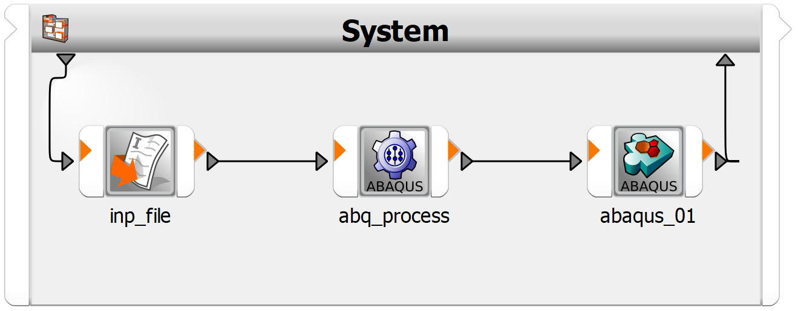

Note
Go to the end to download the full example code.
ETK Abaqus#
This example demonstrates how to create a basic text-based solver chain.
This example uses the etk_abaqus.py file to set up a parametric system
containing text input, the Abaqus process actor, and the Abaqus ETK output
actor. It then explains how you can optionally save
the project to a desired location.
Perform required imports#
Perform the required imports.
from ansys.optislang.core import Optislang
import ansys.optislang.core.examples as examples
Create optiSLang instance#
Create the optiSLang instance.
osl = Optislang(ini_timeout=60)
print(osl)
Get path of example script and run it#
Get the path of the example script and then run this script.
paths = examples.get_files("etk_abaqus")
osl.application.project.run_python_file(paths[0])
Optionally save project#
If you want to save the project to some desired location, uncomment and edit these lines:
path = r'<insert-desired-location>'
osl.application.save_as(os.path.join(path, "test_project.opf"))
Stop and cancel project#
Stop and cancel the project.
osl.dispose()
View generated workflow#
This image shows the generated workflow.
{kind=link}